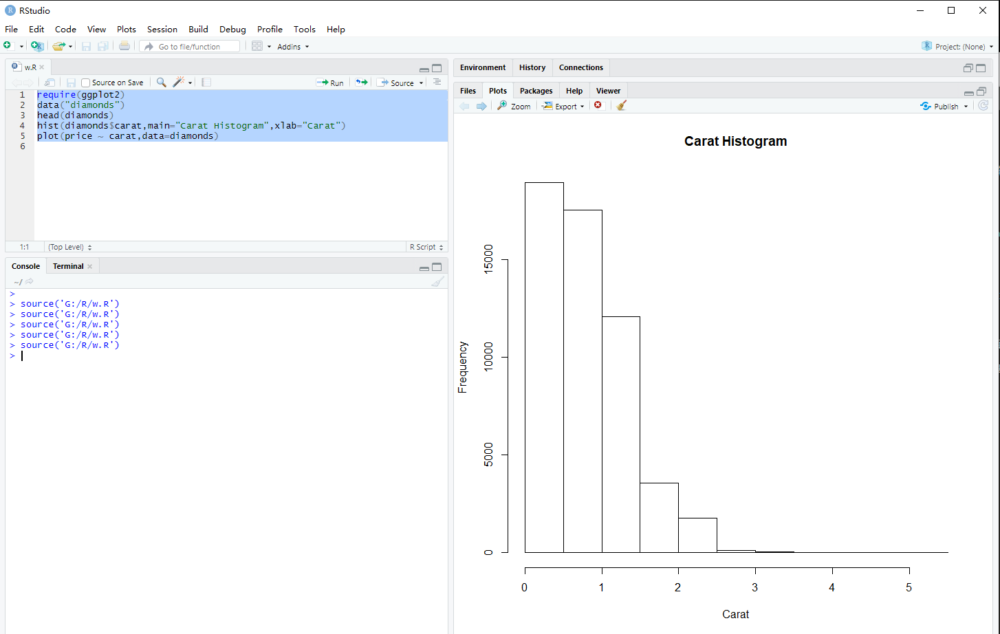
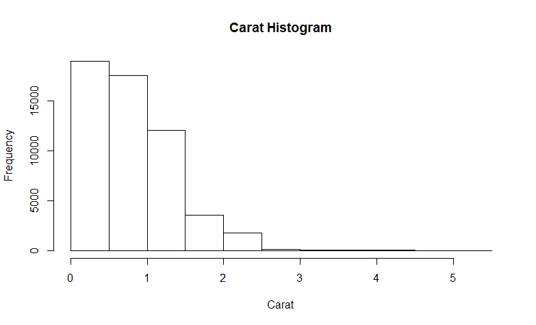
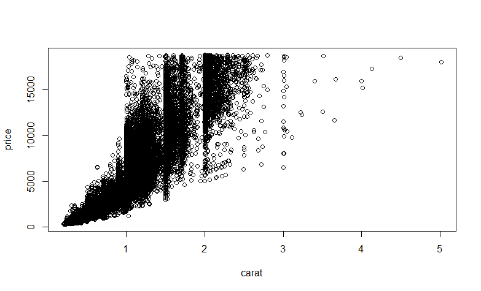
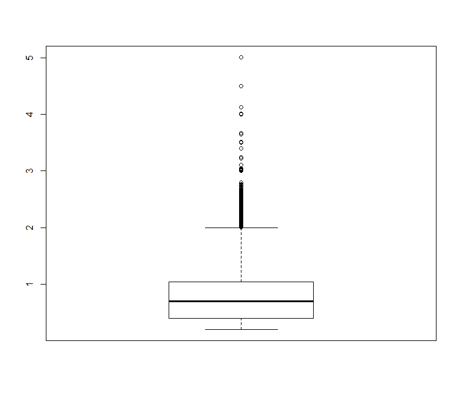
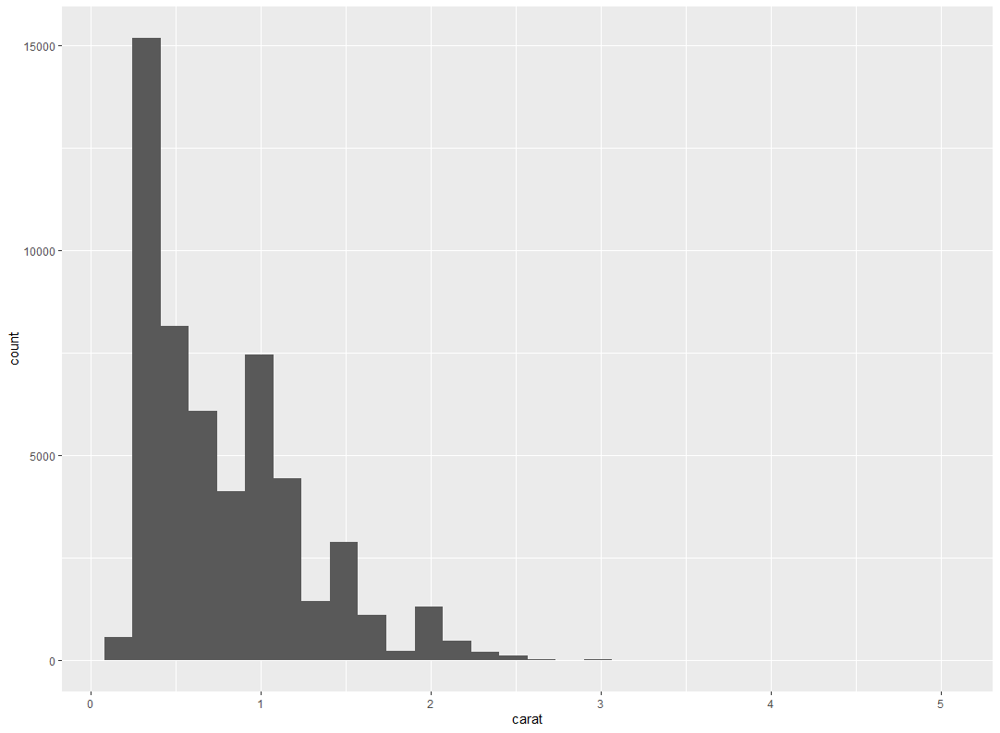

R basic Knowledge
背景介绍
1993年诞生，2011随着大数据的火爆而闻名中国。
参考资料：
- 《R语言实战：机器学习与数据分析》 左飞著
- 《R语言实用数据分析和可视化》Jared P. Lander著
1.0 下载和IDE
清华的镜像 ，下载之后安装即可得到如下图的软件。

RStdio 软件的下载链接，不自带R语言环境和Python一致需要自行安装R的环境。
1.1 使用过程
安装好Rstudio之后和 R的界面其实差别不大，就是在右边多了一个实时数据监控的状态栏，但是其实和Python的IDLE的差别不大，基本上使用还是没有什么问题的。
Part 1:使用问题
1-如何查询函数的使用方法
如果我们对某一个函数有疑问的话只需要在Console 中输入 ?exp右边即会弹出一个对话框，介绍该函数。
2 如何安装一个第三方库
打开Tools-Package -选择一个合适的库来源，然后回到右下方的 Install，然后点击Install，输入搜索关键词然后选中安装。
3 如何运行 R 的文件
新建一个文件之后将我们的代码写入其中，然后点击Source之后其会在下面读取我们的整体代码，然后将我们的绘图结果在右边展示出来，我们可以点击上面的左右符号进行切换图片，点击zoom可以放大观察，点击Export可以导出成PDF或者 PNG等图片格式。

但是我在使用Ggplot2 的时候碰到了一些问题，我们使用 run可以将每一行的代码都在rcmd中进行输入，这就是run和source之间的区别。
Part 2: R语言基础知识
2-0 Ohters
- 变量
x <- 2y = 53 <- za <- b <- 7assign("j",4)- 删除变量：
rm(j)
- 区分大小写
- 数据类型
- numeric 数值型
- integer 整数型 ：
> class(4L) [1] "integer"
- character 字符
- nchar(x)：衡量字符的长度，使用nchar的长度
- factor 因子
- 日期：Date和 POTIXct，分别是天数和秒数
- 逻辑型： True 和 Fasle
- 向量
2-1 vector
一个向量不能包含不同类型的数据，向量在R语言中起着至关重要的、有益的作用，不仅仅是简单的容器，向量是R语言中很特殊的，因为R语言是矢量化的语言。这意味着操作自动地用语向量的每一个分量，不需要遍历向量的每个分量。这是R语言中最伟大的事情之一。
1
2
3
4
5
6
7
8
9
10
11
12
13
14
15
16
17
18
19
20
21
22
23
24
25
26
27
28
29
30
31
32
33
34
35
36
37
38
39
40
41
42
43
44
|
> x <- c(1,2,3,4,5,6,7,8,9,10)
> x
[1] 1 2 3 4 5 6 7 8 9 10
> x +2
[1] 3 4 5 6 7 8 9 10 11 12
> x-3
[1] -2 -1 0 1 2 3 4 5 6 7
> x/4
[1] 0.25 0.50 0.75 1.00 1.25 1.50 1.75 2.00 2.25 2.50
> x^2
[1] 1 4 9 16 25 36 49 64 81 100
> sqrt(x)
[1] 1.000000 1.414214 1.732051 2.000000 2.236068 2.449490 2.645751
[8] 2.828427 3.000000 3.162278
> x <- 1:10
> y <- -5:4
> x +y
[1] -4 -2 0 2 4 6 8 10 12 14
> x- y
[1] 6 6 6 6 6 6 6 6 6 6
> x*y
[1] -5 -8 -9 -8 -5 0 7 16 27 40
> x/y
[1] -0.2 -0.5 -1.0 -2.0 -5.0 Inf 7.0 4.0 3.0 2.5
> x^y
[1] 1.000000e+00 6.250000e-02 3.703704e-02 6.250000e-02 2.000000e-01
[6] 1.000000e+00 7.000000e+00 6.400000e+01 7.290000e+02 1.000000e+04
> length(x)
[1] 10
> length(x+y)
[1] 10
> q <- c("Hockey","football","baseball","Curling","Rbgby")
> nchar(q)
[1] 6 8 8 7 5
|
2-2 数据框
1
2
3
4
5
6
7
8
9
10
11
12
13
14
15
16
17
18
19
20
21
22
23
24
25
26
27
28
29
30
31
32
33
34
35
36
37
38
39
40
41
42
43
44
45
46
47
48
49
50
51
52
53
54
55
56
57
58
59
60
61
62
63
64
65
66
67
68
69
70
71
72
73
74
75
76
77
78
79
80
81
82
83
84
85
86
87
88
89
90
91
92
93
94
| > x <- 10:1
> y <- -4:5
> q <- c("hockey","Football","Baseball","Curling","Rbgby","lacrosse","Basketball","Tennis","cricket","Soccer")
> theDF <- data.frame(x,y,q)
> theDF
x y q
1 10 -4 hockey
2 9 -3 Football
3 8 -2 Baseball
4 7 -1 Curling
5 6 0 Rbgby
6 5 1 lacrosse
7 4 2 Basketball
8 3 3 Tennis
9 2 4 cricket
10 1 5 Soccer
> theDF <- data.frame(First =x ,Second = y,Sport =q)
> theDF
First Second Sport
1 10 -4 hockey
2 9 -3 Football
3 8 -2 Baseball
4 7 -1 Curling
5 6 0 Rbgby
6 5 1 lacrosse
7 4 2 Basketball
8 3 3 Tennis
9 2 4 cricket
10 1 5 Soccer
> nrow(theDF)
[1] 10
> ncol(theDF)
[1] 3
> dim(theDF)
[1] 10 3
> names(theDF)
[1] "First" "Second" "Sport"
> names(theDF)[3]
[1] "Sport"
> head(theDF,n=7)
First Second Sport
1 10 -4 hockey
2 9 -3 Football
3 8 -2 Baseball
4 7 -1 Curling
5 6 0 Rbgby
6 5 1 lacrosse
7 4 2 Basketball
> tail(theDF)
First Second Sport
5 6 0 Rbgby
6 5 1 lacrosse
7 4 2 Basketball
8 3 3 Tennis
9 2 4 cricket
10 1 5 Soccer
> class(theDF)
[1] "data.frame"
> theDF$Sport
[1] hockey Football Baseball Curling Rbgby
[6] lacrosse Basketball Tennis cricket Soccer
10 Levels: Baseball Basketball cricket Curling ... Tennis
> theDF[3,2]
[1] -2
> theDF[3,2:3]
Second Sport
3 -2 Baseball
>
> theDF[c(3,5),2:3]
Second Sport
3 -2 Baseball
5 0 Rbgby
> theDF[,3]
[1] hockey Football Baseball Curling Rbgby
[6] lacrosse Basketball Tennis cricket Soccer
10 Levels: Baseball Basketball cricket Curling ... Tennis
> theDF[,2:3]
Second Sport
1 -4 hockey
2 -3 Football
3 -2 Baseball
4 -1 Curling
5 0 Rbgby
6 1 lacrosse
7 2 Basketball
8 3 Tennis
9 4 cricket
10 5 Soccer
|
2-3 列表
1
2
3
4
5
6
7
8
9
10
11
12
13
14
15
16
17
18
19
20
21
22
23
24
25
26
27
28
29
30
31
32
33
34
35
36
37
38
39
40
41
42
43
44
45
46
47
48
49
50
51
52
53
54
55
56
57
58
59
60
61
62
| > list(1,2,3)
[[1]]
[1] 1
[[2]]
[1] 2
[[3]]
[1] 3
> list(c(1,2,3))
[[1]]
[1] 1 2 3
> (list3 <- list(c(1,2,3),3:7))
[[1]]
[1] 1 2 3
[[2]]
[1] 3 4 5 6 7
> list(theDF,1:10)
[[1]]
First Second Sport
1 10 -4 hockey
2 9 -3 Football
3 8 -2 Baseball
4 7 -1 Curling
5 6 0 Rbgby
6 5 1 lacrosse
7 4 2 Basketball
8 3 3 Tennis
9 2 4 cricket
10 1 5 Soccer
[[2]]
[1] 1 2 3 4 5 6 7 8 9 10
> list5 <- list(theDF,1:10,list3)
> list5
[[1]]
First Second Sport
1 10 -4 hockey
2 9 -3 Football
3 8 -2 Baseball
4 7 -1 Curling
5 6 0 Rbgby
6 5 1 lacrosse
7 4 2 Basketball
8 3 3 Tennis
9 2 4 cricket
10 1 5 Soccer
[[2]]
[1] 1 2 3 4 5 6 7 8 9 10
[[3]]
[[3]][[1]]
[1] 1 2 3
[[3]][[2]]
[1] 3 4 5 6 7
|
2-4 矩阵
1
2
3
4
5
6
7
8
9
10
11
12
13
14
15
16
17
18
19
20
21
| > A <- matrix(1:10,nrow = 5)
> A
[,1] [,2]
[1,] 1 6
[2,] 2 7
[3,] 3 8
[4,] 4 9
[5,] 5 10
> B <- matrix(21:30,nrow=5)
> B
[,1] [,2]
[1,] 21 26
[2,] 22 27
[3,] 23 28
[4,] 24 29
[5,] 25 30
> C <- matrix(21:40,nrow=2)
> C
[,1] [,2] [,3] [,4] [,5] [,6] [,7] [,8] [,9] [,10]
[1,] 21 23 25 27 29 31 33 35 37 39
[2,] 22 24 26 28 30 32 34 36 38 40
|
1.2 可视化
1
2
3
4
5
6
7
8
9
10
| require(ggplot2)
data("diamonds")
head(diamonds)
hist(diamonds$carat,main="Carat Histogram",xlab="Carat")
plot(price ~ carat,data=diamonds)
|
直方图
这幅图反应了 carat的分布情况，注意到，图的标题和X轴的标签分别用参数 main 和 xlab 重新设置了，更复杂的直方图可以用 ggplot2 轻松得到。

散点图
变量成对出现是比较常见的，这种情况下可以绘制散点图。每一个点代表这对变量的一个观测，X轴代表一个变量，y轴代表另一个变量，我们将绘制数据集 diamonds 中用 formula 所表示的 price 关于 carat 的散点图

箱线图
尽管箱线图经常是统计学子学习的第一个图形，但在统计界却广受质疑。哥伦比亚大学的 Andrew Gelman 曾经非常肯定地表示对箱线图的不认同。然而，其他人如 Hadley Wickham 和 John Tukey 是箱线图坚定的拥护者，鉴于其普遍性，我们学习箱线图也是很有必要的。值得庆幸得是，R有绘制箱线图的函数 boxplot
箱线图的原理是用箱内粗的中间线代表数据中位数，并把箱的边界限制在第一和第三分位数之间。也就是说，中间的50%的数据都集中在箱内，且箱体向上下延伸出1.5倍的IQR长度的2条平行线，2条线之外就是异常点。50%的数据集中于箱体内，其余的50%的数据没有显示出来，注意到这一点很重要，有大量的数据没有显示出来。

ggplot 2: 直方图 和 核密度曲线
ggplot 2 的基础结构是由 ggplot 函数构建初始图层，该函数要求数据作为它的第一个参数，它还可以采用更多或者更少的参数，但我们要一直保持这个设置。在定义初始图层后，我们可以使用+来增加图层，我们首先将只讨论几何图层如点、线和直方图，他们是由函数 gemo_point\gemo_line 和 gemo_histogram 生成。这些函数可以设置多个参数，但重要的是须用函数aes指明数据中的变量映射到数轴或者是其他的图形元素。此外，每一个图层可以有不同的图形映射，甚至不同的数据。
回到之前的直方图，我讲用 ggplot2 包展示 diamond 中变量 carats 的分布情况，这可由函数 ggplot 和 gemo_histogram 绘制出。由于直方图只是数据的一维显示，所以我们只需要设置一个图形映射，即映射到x轴。

类似的